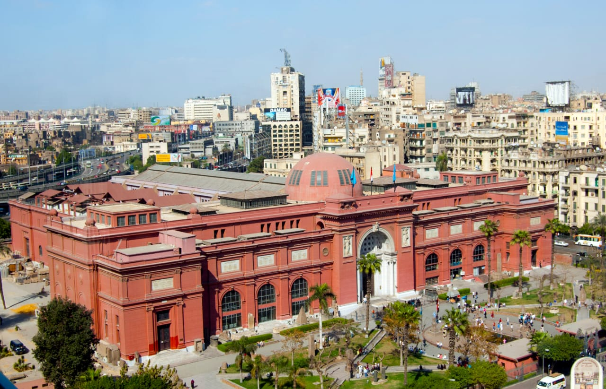

Museum Egypt
Museum Egypt
Didirikan:
1903
Lokasi:
Kairo
Jenis:
Museum
Ukuran Koleksi:
120.000 Koleksi
Direktur:
Mohamed Abdel Hamid Shimy
Situs Web:
www.egyptianmuseum.gov.egMuseum Mesir atau Museum Kairo adalah sebuah museum di Kairo, Mesir. Museum ini adalah rumah bagi koleksi antik bangsa Mesir kuno dan memiliki 120.000 koleksi.
SEJARAH
Pemerintah Mesir mendirikan museum pada tahun 1835 di dekat Taman Ezbekeyah. Museum ini segera pindah ke Boulaq pada tahun 1858 karena bangunan aslinya terlalu kecil untuk menampung semua artefak. Pada tahun 1855 tak lama setelah artefak dipindahkan, Archduke Maximilian dari Austria diberi semua artefak. Dia menyewa seorang arsitek Prancis untuk merancang dan membangun sebuah museum baru untuk barang antik. Gedung baru itu akan dibangun di tepi Sungai Nil di Boulaq . Pada tahun 1878 setelah gedung museum selesai kemudian mengalami beberapa kerusakan kecil, banjir dari Sungai Nil menyebabkan barang antik selanjutnya direlokasi ke museum lain di Giza. Artefak tetap di Giza sampai 1902 ketika museum dipindah hingga saat ini di Tahrir Square.
GEDUNG
Ada dua lantai utama museum, lantai dasar dan lantai pertama. Di lantai dasar ada koleksi papirus dan koin yang digunakan dalam dunia kuno. Berbagai potongan papirus umumnya fragmen kecil, karena pembusukan mereka selama dua ribu tahun terakhir. Beberapa bahasa yang ditemukan pada potongan-potongan ini adalah Yunani, Latin, Arab, dan Mesir Kuno dari tulisan hieroglif. Koin-koin yang ditemui di lantai dasar terbuat dari bermacam logam berbeda termasuk emas, perak, dan perunggu. Koin-koin tersebut tidak hanya Mesir, tetapi juga Yunani, Romawi, dan Islam. Hal ini telah membantu sejarawan penelitian sejarah perdagangan Mesir Kuno. Juga di lantai dasar adalah artefak dari Kerajaan Baru, jangka waktu antara 1550 dan 1069 SM. Artefak ini umumnya lebih besar dari koleksi abad sebelumnya. Barang-barang termasuk patung, meja, dan peti mati (sarkofagus).
Di lantai pertama ada artefak dari dua dinasti terakhir Mesir termasuk barang dari makam para Firaun Thutmosis III, Thutmosis IV, Amenophis II, Hatshepsut, dan punggawa Maiherpri, serta banyak artefak dari Lembah Para Raja.
Penjarahan Tahun 2011
Pada tanggal 28 Januari 2011 saat Revolusi Mesir 2011, museum ini didobrak oleh ratusan orang dan dua mumi dilaporkan hancur. Selain itu, sejumlah koleksi dilaporkan hilang, walaupun beberapa di antaranya kemudian didapatkan kembali berceceran di sekitar museum ataupun disita oleh polisi.
Catatan Kaki
- "Looters destroy mummies during Egypt protests". ABC News. 2011-01-29. Diakses tanggal 2011-01-29.
- "Vandals ravage Egyptian Museum, break mummies". Al-Masry Al-Youm. Diakses tanggal 30 Januari 2011.
- Thomas, S. (21 Agustus 2012). "Egyptian Museum in Cairo – Thefts and Recoveries in 2011". Trafficking Culture. Diakses tanggal 14 Agustus 2013.
Pranala Liar
- Koleksi Museum Di Mesir
- Egyptian Museum Official WebSite 2008-11-21 di WayBack Machine
- Egyptian Museum WebSite 2012-06-11 di WayBack Machine., by Mark T. Rigby
- The Cairo Museum